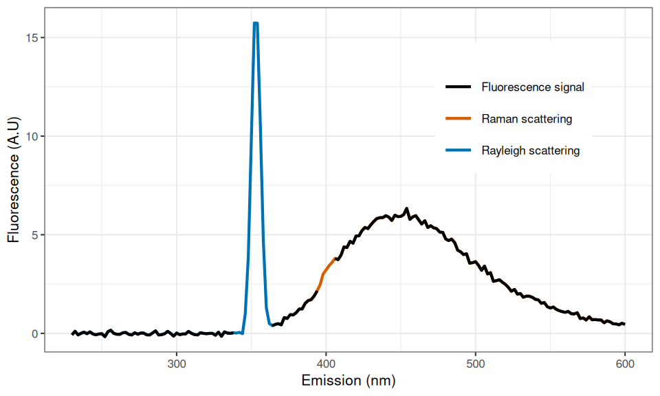
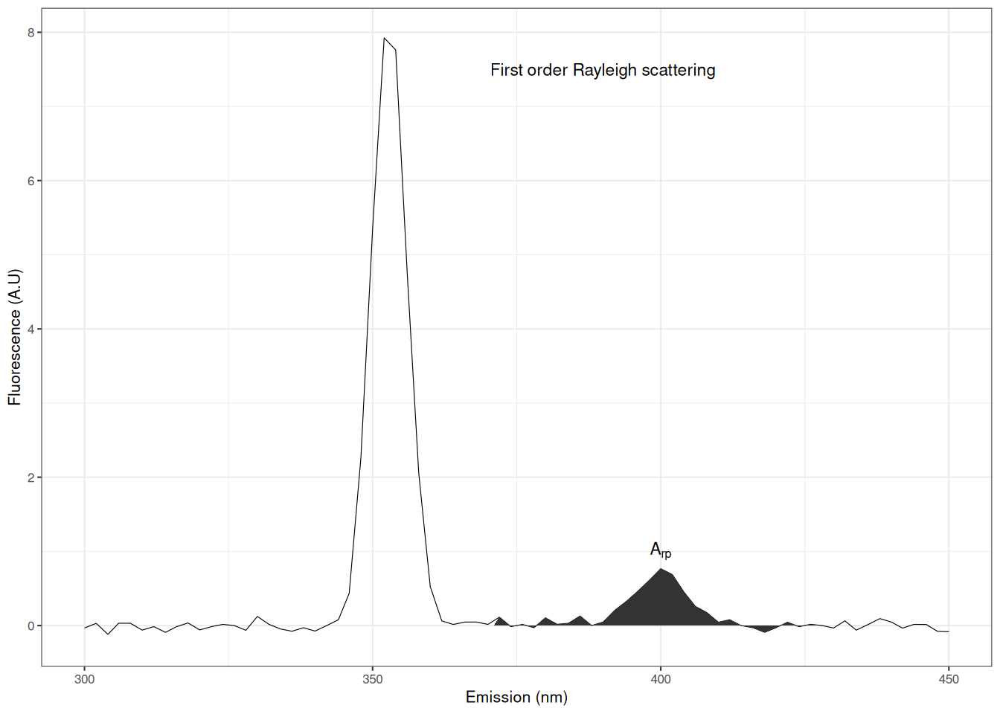
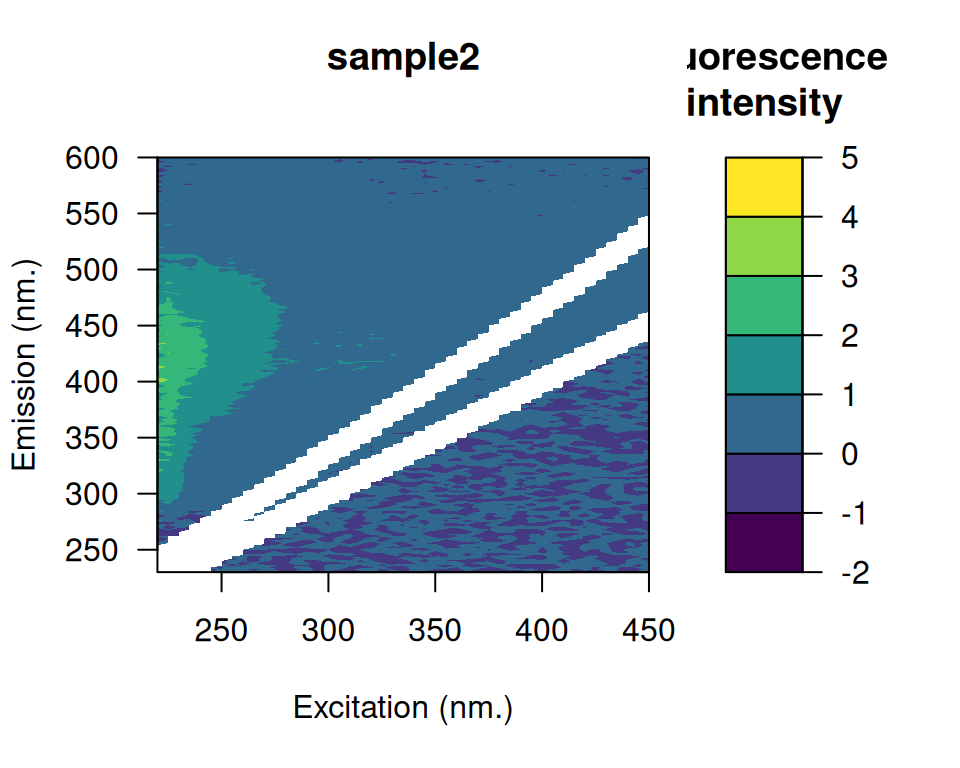

Introduction
Dissolved organic matter (DOM) plays a central role in the functioning of aquatic ecosystems. For example, characteristics of the DOM pool (quantity and quality) determine underwater light climate (Kirk 1994), the composition of aquatic microbial communities (Foreman and Covert 2003; Kritzberg et al. 2006) and the carbon cycling on local to global scales (Cole et al. 2007). Chemically, the DOM pool is complex (> 1500 compounds) and analytical methods used to characterize it are relatively complex, time-consuming and costly (Benner 2002; Seitzinger et al. 2005; Fellman, Hood, and Spencer 2010). This situation called for the development of rapid and cost effective characterization techniques. Because optical properties of DOM can be related to its chemical properties, optical techniques such as fluorescence spectroscopy have been developed and rapidly adopted by the community to characterize the DOM pool in aquatic ecosystems (Paula G. Coble et al. 1990; Paula G. Coble 1996; McKnight et al. 2001).
The seminal paper of (Stedmon, Markager, and Bro 2003) put at the forefront the use of parallel factor analysis (PARAFAC) to aid the characterization of fluorescent DOM. Briefly, this three-way technique allows the decomposition of complex DOM fluorescence signals contained in the excitation-emission matrix (EEM, Fig. 1) into a set of individual chemical components and provides estimations of their relative contribution to the total fluorescence (Bro 1997; Fellman, Hood, and Spencer 2010; Stedmon, Markager, and Bro 2003).
The PARAFAC model is described as (Bro 1997; Harshman 1970):
where ; ; , is the intensity of fluorescence of the the sample at the emission wavelength at the excitation wavelength. is directly proportional to the concentration of the component in the sample . Although PARAFAC gained a lot of attention in environmental sciences, it is also widely used in other research fields such as medical, pharmaceutical, food, social and information sciences (Murphy et al. 2013). Until today, more than 1850 published scientific papers relying on PARAFAC have been identified on Web of Science.
Although PARAFAC was made easier using the MATLAB toolbox (Murphy et al. 2013), preprocessing of EEMs prior to the analysis is still not straightforward. EEM preprocessing is an important part of PARAFAC since it aims to correct any systematic bias in the measurements and to remove signal unrelated to DOM fluorescence (Murphy et al. 2013). Biased models can be produced if these steps are not conducted carefully (see Hiriart-Baer, Diep, and Smith (2008) where scattering fluorescence signals have been modeled and wrongly interpreted). Such data processing is cumbersome as it involves many steps (Stedmon and Bro 2008; Murphy et al. 2013) which are usually executed by hand or within in-house scripting and therefore prone to introduce errors. Another important drawback limiting effective preprocessing of EEMs arise from the wide variety of file formats provided by the different manufacturers of spectrofluorometers that makes data importation difficult to generalize.
Possibly reflecting these difficulties, it was recently pointed out that characterization of DOM using fluorescence spectroscopy is still not routinely included in ecological studies (Fellman, Hood, and Spencer 2010). Given the increasing interest for fluorescence spectroscopy in ecology, tools are needed to unify the main preprocessing steps needed for further analyzes such as PARAFAC or metric calculations. The purpose of the package is to provide a rapid and an elegant interface to perform preprocessing of EEMs as well as to extract common fluorescence-based metrics proposed in the literature to obtain quantitative information about the DOM pool. This paper presents theoretical and mathematical background of the main PARAFAC preprocessing steps and metric calculations with concrete code examples.
Fluorescence of DOM: theoretical and mathematical background
Let us define , an EEM of fluorescence intensities measured along a vector of excitation wavelengths () at emission wavelengths (). Usually, and vary, respectively, between 200-500 nm and 220-600 nm (Fig. 1). denotes the fluorescence intensity measured at excitation and emission (ex.: ).
The following sections present the main correction steps for fluorescence data aiming to correct any systematic bias in the measurements and remove signal unrelated to fluorescence prior to any analysis.
| Correction | Description |
|---|---|
| Blank subtraction | Subtract a pure water sample blank from the fluorescence data to help the removal of Raman and Rayleigh scattering peaks. |
| Scattering removal | Remove the the so-called scattering bands caused by first and second order of Raman and Rayleigh scattering. |
| Inner-filter effect correction | Correct for reabsorption of light occurring at both the excitation and emission wavelengths during measurement. |
| Raman normalization | Remove the dependency of fluorescence intensities from the measuring equipments thus allowing cross-study comparisons. |
Scattering correction
Rayleigh and Raman scattering are optical processes by which some of the incident energy can be absorbed and converted into vibrational and rotational energy (Lakowicz 2006). The resulting scattered energy produce the so-called scattering bands which are visually easily identifiable (Figs. 1 and 2). Given that both types of scattering are repeated across EEMs, it is important to remove such artifacts prior to analysis (Bahram et al. 2006; Zepp, Sheldon, and Moran 2004).

First order of Rayleigh scattering is defined as the region where emission is equal to excitation () causing a diagonal band in the EEM (Fig. 1) whereas the second order of Rayleigh scattering occurs at two times the emission wavelength of the primary peak (). For water, Raman scattering occurs at a wavenumber 3 600 (or ) lower than the incident excitation wavenumber (Lakowicz 2006). Mathematically, first order Raman scattering is defined as follow:
where is the incident excitation wavelength (nm). Second order Raman scattering is then simply defined as:
Different interpolation techniques have been proposed to eliminate scattering (Zepp, Sheldon, and Moran 2004; Bahram et al. 2006). However, it is a common practice to simply remove the scattering-bands by inserting missing values (Fig. 3) at the corresponding positions (Murphy et al. 2013; Stedmon and Bro 2008).
Inner-filter effect correction
The inner-filter effect (IFE) is an optical phenomenon of reabsorption of emitted light and occurs particularly in highly concentrated samples (Fig. 4). IFE is known to cause underestimation of fluorescence intensities especially at shorter wavelengths and even to alter the shape and the positioning of fluorescence spectra by shifting peak positions toward lower wavelengths (Fig. 4) with increasing concentration (Mobed et al. 1996; Kothawala et al. 2013). However, it was shown that the loss of fluorescence due to IFE could be estimated from absorbance spectra measured on the same sample using Equation (4) (Ohno 2002; Parker and Barnes 1957):
where is the fluorescence in the absence of IFE, is the measured fluorescence intensity, is half the cuvette pathlength (usually 0.5 cm) for excitation and emission absorbance, is the absorbance at the excitation wavelength and the absorbance at the emission wavelength (Fig. 4B).
NA) have been placed in both diagonals using a bandwidth of 10 nm.It was recently shown that IFE corrected algebraically was not appropriate when total absorbance, defined as (see Equation (4)), is greater than 1.5 (Kothawala et al. 2013). Under this circumstance, a two-fold dilution of the sample has been recommended. If this happen, a warning message will be displayed by the package during the correction process.
Raman calibration
The same DOM sample measured on different spectrofluorometers (or even the same but with different settings) can give important differences in fluorescence intensities (Lawaetz and Stedmon 2009; Paula G. Coble, Schultz, and Mopper 1993). The purpose of the Raman calibration is to remove the dependency of fluorescence intensities on the measuring equipment, thus allowing cross-study comparisons. Given that the Raman peak position of a water sample is located at a fixed position, (Lawaetz and Stedmon 2009) proposed to use the Raman integral of a blank-water sample measured the same day as the EEM to perform calibration. Moreover, the area of the Raman peak (, Fig. 5) is defined as the area of the emission profile between 371 and 428 nm at a fixed excitation of 350 nm (Lawaetz and Stedmon 2009).

Mathematically, the value of is calculated using the following integral (Equation(5)):
where is the fluorescence intensity of a pure water sample (preferably deionized and ultraviolet exposed, Lawaetz and Stedmon (2009)) at excitation nm and at emission nm. Each values of the EEM are then normalized using the scalar value of accordingly to Equation (6):
where is the normalized EEM with fluorescence intensities now expressed as Raman Units (R.U.), are the unnormalized measured fluorescence intensities and is the Raman peak area.
Metrics
A wide range of different metrics obtained from EEMs have been proposed to characterize the DOM pool in aquatic ecosystems. These metrics extract quantitative information in specific regions (wavelengths) in EEMs. The following sections present an overview of the principal metrics supported by the package.
Coble’s peaks
The following table presents the five major fluorescent components identified by (Paula G. Coble 1996) in marine EEMs. Peaks B and T represent protein-like compounds (tyrosine and tryptophane), peaks A and C are indicators of humic-like components whereas peak M was associated to marine humic-like fluorescence.
| Peak | Ex (nm) | Em (nm) |
|---|---|---|
| B | 275 | 310 |
| T | 275 | 340 |
| A | 260 | 380-460 |
| M | 312 | 380-420 |
| C | 350 | 420-480 |
Fluorescence, humification and biological indices
Three main indices have been proposed to trace the diagnostic state of the DOM pool in aquatic ecosystems. The fluorescence index (FI) was shown to be a good indicator of the general source and aromaticity of DOM in lakes, streams and rivers (McKnight et al. 2001). This index is calculated as the ratio of fluorescence at emission 450 nm and 500 nm, at fixed excitation of 370 nm (Equation (7)).
The humification index (HIX) is a measure of the complexity and the aromatic nature of DOM (Ohno 2002). HIX calculated as the ratio of the sum of the fluorescence between 435 and 480 nm and between 300 and 345 nm at a fixed excitation of 254 nm (Equation (8)).
The biological index (BIX) is a measure to characterize biological production of DOM (Huguet et al. 2009). BIX is calculated at excitation 310 nm, by dividing the fluorescence intensity emitted at emission 380 nm and at 430 nm (Equation (9)).
R code and study case
Main preprocessing steps using the eemR package are illustrated using a subset of three EEMs from (Massicotte and Frenette 2011). Briefly, these EEMs (see Fig. 1 for an example) have been sampled in the St. Lawrence River, one of the largest rivers in North America. Fluorescence matrices of DOM were measured on a Cary Eclipse spectrofluorometer (Varian, Mississauga, Ontario, Canada) over excitation wavelengths between 220 and 450 nm (5-nm increment) and emission wavelengths between 230 and 600 nm (2-nm increment). All functions from the package start with the prefix 'eem_'.
library(eemR)
ls("package:eemR")
#> [1] "absorbance" "eem_bind"
#> [3] "eem_biological_index" "eem_coble_peaks"
#> [5] "eem_cut" "eem_export_matlab"
#> [7] "eem_extract" "eem_fluorescence_index"
#> [9] "eem_humification_index" "eem_inner_filter_effect"
#> [11] "eem_names" "eem_names<-"
#> [13] "eem_peaks" "eem_raman_normalisation"
#> [15] "eem_read" "eem_remove_blank"
#> [17] "eem_remove_scattering" "eem_set_wavelengths"Data importation and plotting
Importation of EEMs into is done using the eem_read() function. Given that fluorescence files are dependent on the spectrofluorometer used, will determine automatically from which manufacturer the files are from and load them accordingly.
file <- system.file("extdata/cary/scans_day_1", package = "eemR")
eems <- eem_read(file, import_function = "cary")The generic summary() function displays useful information such as: (1) the wavelength ranges used in both emission and excitation modes, (2) the manufacturer from which the file was read and (3) the state of the EEM which indicate which corrections have been applied.
summary(eems)
#> sample ex_min ex_max em_min em_max is_blank_corrected is_scatter_corrected
#> 1 nano 220 450 230 600 FALSE FALSE
#> 2 sample1 220 450 230 600 FALSE FALSE
#> 3 sample2 220 450 230 600 FALSE FALSE
#> 4 sample3 220 450 230 600 FALSE FALSE
#> is_ife_corrected is_raman_normalized
#> 1 FALSE FALSE
#> 2 FALSE FALSE
#> 3 FALSE FALSE
#> 4 FALSE FALSEA surface plot of EEMs is made using the plot(x, which = 1) function where which is the index of the EEM to be plotted (see Fig. 3).
plot(eems, which = 3L)Interactive plots using a simple shiny app can be lunched to interactively browse EEMs.
plot(eems, interactive = TRUE)Blank subtraction
Subtraction of a water blank from the measured samples may help to reduce scattering (Murphy et al. 2013; Stedmon and Bro 2008). In , this is done using the eem_remove_blank(eem, blank) function where eem is a list of EEMs and blank is a water blank.
file <- system.file("extdata/cary/scans_day_1", "nano.csv", package = "eemR")
blank <- eem_read(file, import_function = "cary")
eems <- eem_remove_blank(eems, blank)Raman and Rayleigh scattering removal
Scattering removal (Equation (2) and Equation (3)) is performed using the eem_remove_scattering(eem, type, order, width) function where eem is a list of EEMs, type is the scattering type (raman or rayleigh), order is the order of the scattering (1 or 2) and width the width in nanometers of the slit windows to be removed. In the following example, only first order and Raman and Rayleigh scattering are removed using a bandwidth of 10 nm (Fig. 3).
eems <- eem_remove_scattering(eems, "rayleigh", 1L, 10L) |>
eem_remove_scattering("raman", 1L, 10L)
plot(eems, which = 3L)
Inner-filter effect correction
IFE correction requires the use of absorbance data (Equation (4)). For each EEM, an absorbance spectra must be supplied. The easiest way to provide absorbance is to use a data frame with column names matching EEMs names. In the following data frame, the first column represents the wavelengths at which absorbance have been measured whereas the remaining columns are absorbance spectra for sample1, sample2 and sample3.
Note that EEM names can be obtained using the eem_sample_names() function.
eem_names(eems)
#> [1] "nano" "sample1" "sample2" "sample3"IFE correction is performed using the eem_inner_filter_effect(eem, absorbance, pathlength) function where eem is a list of EEMs, absorbance is a data frame containing absorbance spectra and pathlength is the absorbance cuvette pathlength expressed in (Fig. 4B). For each EEM contained in eem, the ranges spanned by the IFE correction factors and total absorbance (Equation (4)) are displayed to the user. This can serve as diagnostic tool to determine if the mathematical correction was the appropriate method to use to handle IFE.
eems <- eem_inner_filter_effect(
eem = eems,
absorbance = absorbance,
pathlength = 1L
)
#> Warning: Absorbance spectrum for nano was not found. Returning uncorrected EEM.
#> sample1
#> Range of IFE correction factors: 1.0112 1.5546
#> Range of total absorbance (Atotal) : 0.0096 0.3832
#>
#> sample2
#> Range of IFE correction factors: 1.0061 1.3124
#> Range of total absorbance (Atotal) : 0.0053 0.2362
#>
#> sample3
#> Range of IFE correction factors: 1.016 2.3713
#> Range of total absorbance (Atotal) : 0.0138 0.75
plot(eems, which = 3L)Fig. 4 presents intermediate results obtained for the correction of sample3. Note the nonlinearity of the correction with higher effect at lower wavelengths (bottom-left corner in panel C). The corrected EEM is presented in Fig. 4D which is the result of the operation of dividing matrix in 4A by 4C.
Raman normalization
The last step of the correction process consist to calibrate fluorescence intensities using the Raman scatter peak of water (Lawaetz and Stedmon 2009). This is performed using the eem_raman_normalisation(eem, blank) function where eem is a list of EEMs and blank is a water blank measured the same day. Here, the same water-blank is used for the three EEMs. Note that the value of the Raman area (, Equation(5)) is printed.
eems <- eem_raman_normalisation(eems, blank)
#> Raman area: 9.540904
#> Raman area: 9.540904
#> Raman area: 9.540904
plot(eems, which = 3L)At this stage, all corrections have been performed and EEMs are ready to be exported into MATLAB for PARAFAC analysis. The state of the EEMs can be verified using the summary() function.
summary(eems)
#> sample ex_min ex_max em_min em_max is_blank_corrected is_scatter_corrected
#> 1 nano 220 450 230 600 FALSE TRUE
#> 2 sample1 220 450 230 600 TRUE TRUE
#> 3 sample2 220 450 230 600 TRUE TRUE
#> 4 sample3 220 450 230 600 TRUE TRUE
#> is_ife_corrected is_raman_normalized
#> 1 FALSE FALSE
#> 2 TRUE TRUE
#> 3 TRUE TRUE
#> 4 TRUE TRUEExporting to MATLAB
The drEEM MATLAB toolbox (Murphy et al. 2013) used to perform PARAFAC analysis requires data in a specific format (structure). The eem_export_matlab(file, ...) function can be used to export corrected EEMs into a PARAFAC ready format. The first file argument is the mat file where to export the structure and the second argument ... is one or more eem object.
eem_export_matlab("myfile.mat", eems)Once exported, one can simply import the generated mat file in MATLAB using load('myfile.mat');.
Metric extraction
Coble’s peaks can be extracted using the eem_coble_peaks(eem) function. Note that for peaks A, M, C, the maximum fluorescence intensity in the range of emission region is returned.
file <- system.file("extdata/cary/scans_day_1", package = "eemR")
eems <- eem_read(file, import_function = "cary")
eem_coble_peaks(eems, verbose = FALSE)
#> sample b t a m c
#> 1 nano 0.8745673 0.1401188 0.140175 0.09653326 0.1255788
#> 2 sample1 1.5452981 1.0603312 3.731836 2.42409567 1.8149415
#> 3 sample2 1.2629968 0.6647042 1.583489 1.02359302 0.7709074
#> 4 sample3 1.4740862 1.3162812 8.416034 6.06335506 6.3179129Fluorescence (FI), humification (HIX) and biological (BIX) indices can be extracted as follow.
eem_fluorescence_index(eems, verbose = FALSE)
#> sample fi
#> 1 nano -0.5932057
#> 2 sample1 1.2647823
#> 3 sample2 1.4553330
#> 4 sample3 1.3294132
eem_humification_index(eems, verbose = FALSE)
#> sample hix
#> 1 nano 0.5568136
#> 2 sample1 6.3795618
#> 3 sample2 4.2548483
#> 4 sample3 13.0246234
eem_biological_index(eems, verbose = FALSE)
#> sample bix
#> 1 nano 2.6812045
#> 2 sample1 0.7062640
#> 3 sample2 0.8535423
#> 4 sample3 0.4867927It should be noted that different excitation and emission wavelengths are often used to measure EEMs. Hence, it is possible to have mismatch between measured wavelengths and wavelengths used to calculate specific metrics. In these circumstances, EEMs are interpolated using the the package (Borchers 2015). A message warning the user will be displayed if data interpolation is performed. This behavior can be controlled using the verbose = TRUE/FALSE parameter.
Using R pipeline
Note that it is also possible to use the magrittr pipe line with most functions from eemR.
file <- system.file("extdata/cary/scans_day_1/", package = "eemR")
file |>
eem_read(recursive = TRUE, import_function = "cary") |>
eem_raman_normalisation() |>
eem_remove_scattering(type = "raman", order = 1L, width = 10L) |>
eem_remove_scattering(type = "rayleigh", order = 1L, width = 10L) |>
plot(2L)Conclusion
provides a flexible interface for manipulating and preprocessing fluorescence matrices based on theoretical and mathematical foundations of fluorescence spectroscopy (Lakowicz 2006). Furthermore, this package removes the drawbacks associated with EEM manipulation (dependent on spectrofluorometer manufacturer) and unifies the most important steps involved in EEM preparation in order to correct and remove systematic bias in fluorescence measurements. This will likely contribute to promote the use of fluorescence spectroscopy in various fields.
References
Bahram, Morteza, Rasmus Bro, Colin Stedmon, and Abbas Afkhami. 2006. “Handling of Rayleigh and Raman scatter for PARAFAC modeling of fluorescence data using interpolation.” Journal of Chemometrics 20 (3-4): 99–105. https://doi.org/10.1002/cem.978.
Benner, R. 2002. “Chemical composition and reactivity.” In Biogeochemistry of Marine Dissolved Organic Matter, edited by Dennis A Hansell and Craig A Carlson, 59–90. San Diego, CA: Academic Press.
Borchers, Hans Werner. 2015. pracma: Practical Numerical Math Functions. https://cran.r-project.org/package=pracma.
Bro, Rasmus. 1997. “PARAFAC. Tutorial and applications.” Chemometrics and Intelligent Laboratory Systems 38 (2): 149–71. https://doi.org/10.1016/S0169-7439(97)00032-4.
Coble, Paula G. 1996. “Characterization of marine and terrestrial DOM in seawater using excitation-emission matrix spectroscopy.” Marine Chemistry 51 (4): 325–46. https://doi.org/10.1016/0304-4203(95)00062-3.
Coble, Paula G, Sarah A Green, Neil V Blough, and Robert B Gagosian. 1990. “Characterization of dissolved organic matter in the Black Sea by fluorescence spectroscopy.” Nature 348 (6300): 432–35. https://doi.org/10.1038/348432a0.
Coble, Paula G., Christopher a. Schultz, and Kenneth Mopper. 1993. “Fluorescence contouring analysis of DOC intercalibration experiment samples: a comparison of techniques.” Marine Chemistry 41 (1-3): 173–78. https://doi.org/10.1016/0304-4203(93)90116-6.
Cole, J J, Y T Prairie, N F Caraco, W H McDowell, L J Tranvik, R G Striegl, C M Duarte, et al. 2007. “Plumbing the Global Carbon Cycle: Integrating Inland Waters into the Terrestrial Carbon Budget.” Ecosystems 10 (1): 172–85. https://doi.org/10.1007/s10021-006-9013-8.
Fellman, Jason B, Eran Hood, and Robert G M Spencer. 2010. “Fluorescence spectroscopy opens new windows into dissolved organic matter dynamics in freshwater ecosystems: A review.” Limnology and Oceanography 55 (6): 2452–62. https://doi.org/10.4319/lo.2010.55.6.2452.
Foreman, C. M., and J. S. Covert. 2003. “Linkages between Dissolved Organic Matter Composition and Bacterial Community Structure.” In Aquatic Ecosystems : Interactivity of Dissolved Organic Matter, 343–62. Elsevier. https://doi.org/10.1016/B978-012256371-3/50015-9.
Harshman, Richard a. 1970. “Foundations of the PARAFAC procedure: Models and conditions for an ‘explanatory’ multimodal factor analysis.” UCLA Working Papers in Phonetics 16 (10): 1–84.
Hiriart-Baer, Véronique P., Ngan Diep, and Ralph E. H. Smith. 2008. “Dissolved Organic Matter in the Great Lakes: Role and Nature of Allochthonous Material.” Journal of Great Lakes Research 34 (3): 383–94.
Huguet, A., L. Vacher, S. Relexans, S. Saubusse, J. M. Froidefond, and E. Parlanti. 2009. “Properties of fluorescent dissolved organic matter in the Gironde Estuary.” Organic Geochemistry 40 (6): 706–19. https://doi.org/10.1016/j.orggeochem.2009.03.002.
Kirk, John T O. 1994. Light and photosynthesis in aquatic ecosystems. 2nd ed. Cambridge [England] ; New York: Cambridge University Press.
Kothawala, Dolly N., Kathleen R. Murphy, Colin A. Stedmon, Gesa A. Weyhenmeyer, and Lars J. Tranvik. 2013. “Inner filter correction of dissolved organic matter fluorescence.” Limnology and Oceanography: Methods 11 (12): 616–30. https://doi.org/10.4319/lom.2013.11.616.
Kritzberg, Emma S, Jonathan J Cole, Michael M Pace, and Wilhelm Granéli. 2006. “Bacterial Growth on Allochthonous Carbon in Humic and Nutrient-enriched Lakes: Results from Whole-Lake 13C Addition Experiments.” Ecosystems 9 (3): 489–99. https://doi.org/10.1007/s10021-005-0115-5.
Lakowicz, Joseph R. 2006. Principles of Fluorescence Spectroscopy. Edited by Joseph R. Lakowicz. Boston, MA: Springer-Verlag. https://doi.org/10.1007/978-0-387-46312-4.
Lawaetz, A J, and C A Stedmon. 2009. “Fluorescence Intensity Calibration Using the Raman Scatter Peak of Water.” Applied Spectroscopy 63 (8): 936–40. https://doi.org/10.1366/000370209788964548.
Massicotte, Philippe, and Jean-Jacques Frenette. 2011. “Spatial connectivity in a large river system: resolving the sources and fate of dissolved organic matter.” Ecological Applications 21 (7): 2600–2617. https://doi.org/10.1890/10-1475.1.
McKnight, Diane M., Elizabeth W. Boyer, Paul K. Westerhoff, Peter T. Doran, Thomas Kulbe, and Dale T. Andersen. 2001. “Spectrofluorometric characterization of dissolved organic matter for indication of precursor organic material and aromaticity.” Limnology and Oceanography 46 (1): 38–48. https://doi.org/10.4319/lo.2001.46.1.0038.
Mobed, Jarafshan J, Sherry L Hemmingsen, Jennifer L Autry, and Linda B McGown. 1996. “Fluorescence Characterization of IHSS Humic Substances: Total Luminescence Spectra with Absorbance Correction.” Environmental Science & Technology 30 (10): 3061–65. https://doi.org/10.1021/es960132l.
Murphy, Kathleen R., Colin a. Stedmon, Daniel Graeber, and Rasmus Bro. 2013. “Fluorescence spectroscopy and multi-way techniques. PARAFAC.” Analytical Methods 5 (23): 6557. https://doi.org/10.1039/c3ay41160e.
Ohno, Tsutomu. 2002. “Fluorescence Inner-Filtering Correction for Determining the Humification Index of Dissolved Organic Matter.” Environmental Science & Technology 36 (4): 742–46. https://doi.org/10.1021/es0155276.
Parker, C. a., and W. J. Barnes. 1957. “Some experiments with spectrofluorimeters and filter fluorimeters.” The Analyst 82 (978): 606. https://doi.org/10.1039/an9578200606.
Seitzinger, S P, H Hartnett, R Lauck, M Mazurek, T Minegishi, G Spyres, and R Styles. 2005. “Molecular-level chemical characterization and bioavailability of dissolved organic matter in stream water using electrospray-ionization mass spectrometry.” Limnology and Oceanography 50 (1): 1–12. https://doi.org/10.4319/lo.2005.50.1.0001.
Stedmon, Colin A, and Rasmus Bro. 2008. “Characterizing dissolved organic matter fluorescence with parallel factor analysis: a tutorial.” Limnology and Oceanography: Methods 6 (11): 572–79. https://doi.org/10.4319/lom.2008.6.572.
Stedmon, Colin A, Stiig Markager, and Rasmus Bro. 2003. “Tracing dissolved organic matter in aquatic environments using a new approach to fluorescence spectroscopy.” Marine Chemistry 82 (3-4): 239–54. https://doi.org/10.1016/S0304-4203(03)00072-0.
Zepp, Richard G, Wade M Sheldon, and Mary Ann Moran. 2004. “Dissolved organic fluorophores in southeastern US coastal waters: correction method for eliminating Rayleigh and Raman scattering peaks in excitation–emission matrices.” Marine Chemistry 89 (1-4): 15–36. https://doi.org/10.1016/j.marchem.2004.02.006.